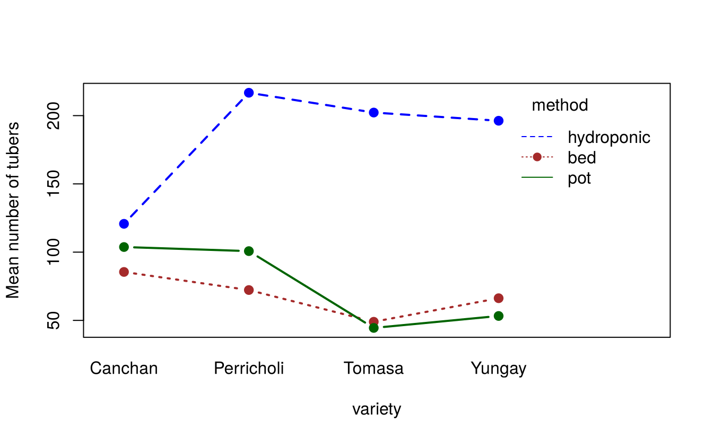

14 Experimental designs and multi-factor experiments
Field experiments rarely have homogeneous experimental units. Soil fertility, moisture and slope vary across a field, and this variation inflates the experimental error. Local control, i.e. grouping similar units into blocks, removes part of this variation from the error and makes the comparison of treatments more precise. This chapter covers the analysis of:
- randomised complete block design (RCBD) — two-way classification
- Latin square design (LSD) — three-way classification
- factorial experiments — several factors at once
- split-plot and strip-plot designs — factors applied to plots of different sizes
All are analysed with aov() (or lm()); only the model formula changes. The agricolae package also has functions (sp.plot(), strip.plot()) that produce tables in the style of Gomez and Gomez (1984). Designs can be randomised with agricolae functions such as design.crd(), design.rcbd(), design.lsd(), design.ab() and design.split().
14.1 Randomised complete block design (RCBD)
The experimental area is divided into \(r\) blocks of \(t\) plots each, so that plots within a block are as uniform as possible. Every treatment appears once in each block, randomised independently in each block. Blocks are laid out across the fertility gradient.
14.1.1 Model
\[y_{ij} = \mu + \tau_i + \beta_j + e_{ij}, \qquad i = 1, \ldots, t; \; j = 1, \ldots, r\]
where \(\beta_j\) is the effect of block \(j\).
| Source | df | SS |
|---|---|---|
| Blocks | \(r - 1\) | \(\sum_j B_j^2 / t - \text{CF}\) |
| Treatments | \(t - 1\) | \(\sum_i T_i^2 / r - \text{CF}\) |
| Error | \((r-1)(t-1)\) | by subtraction |
| Total | \(rt - 1\) | \(\sum y_{ij}^2 - \text{CF}\) |
14.1.2 Example
We analyse the yield (t/ha) of 28 potato genotypes grown in three replications (blocks) at La Molina in 2002, part of the plrv data used in Chapter 9.
library(agricolae)
data(plrv)
lm02 <- droplevels(subset(plrv, Locality == "LM-02"))
lm02$Rep <- factor(lm02$Rep) # blocks must be a factor
str(lm02)#> 'data.frame': 84 obs. of 6 variables:
#> $ Genotype : Factor w/ 28 levels "102.18","104.22",..: 1 2 3 4 5 6 7 8 9 10 ...
#> $ Locality : Factor w/ 1 level "LM-02": 1 1 1 1 1 1 1 1 1 1 ...
#> $ Rep : Factor w/ 3 levels "1","2","3": 1 1 1 1 1 1 1 1 1 1 ...
#> $ WeightPlant: num 0.985 0.985 1.06 0.96 1.17 1.1 0.89 0.78 1.18 1.05 ...
#> $ WeightPlot : num 9.85 9.85 10.6 9.6 11.7 9.9 8.9 7.8 11.8 10.5 ...
#> $ Yield : num 36.5 36.5 39.3 35.6 43.3 ...#> Df Sum Sq Mean Sq F value Pr(>F)
#> Rep 2 480 240.1 8.97 0.00043 ***
#> Genotype 27 3890 144.1 5.38 0.000000077 ***
#> Residuals 54 1445 26.8
#> ---
#> Signif. codes: 0 '***' 0.001 '**' 0.01 '*' 0.05 '.' 0.1 ' ' 1
cv.model(rcbd)#> [1] 14.93Genotypes differ highly significantly (\(p < 0.001\)). The block effect is also significant, which shows that blocking was worthwhile.
Put the block term first in the formula. With balanced data the order does not matter, but with missing values R computes sequential (Type I) sums of squares, and treatments should then be adjusted for blocks.
14.1.3 Efficiency of RCBD relative to CRD
How much did blocking help? The relative efficiency of the RCBD compared with a CRD is
\[\text{RE} = \frac{(r-1)\,M_b + r(t-1)\,M_e}{(rt - 1)\,M_e}\]
where \(M_b\) and \(M_e\) are the block and error mean squares.
tab <- summary(rcbd)[[1]]
Mb <- tab["Rep", "Mean Sq"]; Me <- tab["Residuals", "Mean Sq"]
r <- 3; t <- 28
RE <- ((r - 1) * Mb + r * (t - 1) * Me) / ((r * t - 1) * Me)
RE#> [1] 1.192The RCBD was about 19% more efficient than a CRD would have been: a CRD would need about 1.19 times as many replications to achieve the same precision.
14.1.4 Comparing genotypes
With 28 genotypes, letter groupings become long. Here we show the top ten by Tukey’s HSD:
#> Yield groups
#> Unica 47.84 a
#> 506.2 45.56 ab
#> 157.26 45.16 abc
#> 427.7 44.44 abc
#> 317.6 42.35 abcd
#> 235.6 40.37 abcde
#> 104.22 39.20 abcde
#> 121.31 38.40 abcde
#> 364.21 37.90 abcdef
#> 406.12 37.78 abcdef
hsd$statistics#> MSerror Df Mean CV MSD
#> 26.76 54 34.64 14.93 16.5514.2 Latin square design (LSD)
When fertility varies in two directions, a Latin square controls both. With \(t\) treatments, the field is divided into \(t\) rows and \(t\) columns, and each treatment occurs exactly once in each row and each column. The number of replications equals the number of treatments, so the design is practical for 4 to 8 treatments.
\[y_{ijk} = \mu + \rho_i + \gamma_j + \tau_k + e_{ijk}\]
with error df \((t-1)(t-2)\).
14.2.1 Example
Four melon varieties were compared in a 4 × 4 Latin square (melon in agricolae):
data(melon)
melon$row <- factor(melon$row)
melon$col <- factor(melon$col)
# Layout of the varieties in the field
xtabs(as.integer(variety) ~ row + col, data = melon)#> col
#> row 1 2 3 4
#> 1 1 4 2 3
#> 2 2 3 4 1
#> 3 3 2 1 4
#> 4 4 1 3 2#> Df Sum Sq Mean Sq F value Pr(>F)
#> row 3 426 142.1 2.86 0.13
#> col 3 152 50.7 1.02 0.45
#> variety 3 484 161.2 3.25 0.10
#> Residuals 6 298 49.6
tapply(melon$yield, melon$variety, mean)#> V1 V2 V3 V4
#> 47.25 42.25 49.25 35.00The varieties do not differ significantly (\(p = 0.10\)), so no multiple comparison is needed. With only 6 error df, a Latin square of this size has low power.
14.3 Factorial experiments
In a factorial experiment two or more factors are studied together, and every level of each factor is combined with every level of the others. A 3 × 4 factorial has 12 treatment combinations. Factorial experiments estimate:
- the main effect of each factor, averaged over the levels of the other factor;
- the interaction: whether the effect of one factor depends on the level of the other.
14.3.1 Model for a two-factor factorial in RCBD
\[y_{ijk} = \mu + \beta_k + \alpha_i + \gamma_j + (\alpha\gamma)_{ij} + e_{ijk}\]
where \(\alpha_i\) and \(\gamma_j\) are the main effects of factors A and B, and \((\alpha\gamma)_{ij}\) their interaction.
14.3.2 Example
In a greenhouse experiment at CIP, Peru, four potato varieties were grown by three methods of minituber production (plant bed, hydroponics and pots) in four replications. The response is the number of minitubers from 10 plants (greenhouse2 in agricolae).
#> 'data.frame': 48 obs. of 5 variables:
#> $ method : Factor w/ 3 levels "bed","hydroponic",..: 2 2 2 2 2 2 2 2 2 2 ...
#> $ variety : Factor w/ 4 levels "Canchan","Perricholi",..: 4 4 4 4 2 2 2 2 1 1 ...
#> $ replication: Factor w/ 4 levels "1","2","3","4": 1 2 3 4 1 2 3 4 1 2 ...
#> $ tubers : int 178 226 147 234 310 180 175 202 135 133 ...
#> $ weight : num 1193 1275 991 1158 1293 ...The formula method * variety expands to method + variety + method:variety:
#> Df Sum Sq Mean Sq F value Pr(>F)
#> replication 3 1659 553 0.91 0.449
#> method 2 134455 67227 110.10 2.5e-15 ***
#> variety 3 7103 2368 3.88 0.018 *
#> method:variety 6 29441 4907 8.04 2.2e-05 ***
#> Residuals 33 20150 611
#> ---
#> Signif. codes: 0 '***' 0.001 '**' 0.01 '*' 0.05 '.' 0.1 ' ' 1Both main effects and the interaction are significant. When the interaction is significant, the main effects can be misleading: the effect of variety depends on the method. Look at the two-way table of means and an interaction plot:
#> Canchan Perricholi Tomasa Yungay
#> bed 85.5 72.2 49.0 66.2
#> hydroponic 120.8 216.8 202.2 196.2
#> pot 103.8 100.8 44.5 53.2
with(gh, interaction.plot(variety, method, tubers, type = "b", pch = 19,
col = c("brown", "blue", "darkgreen"), lwd = 2,
ylab = "Mean number of tubers"))
Hydroponics produced far more tubers than the other methods. In hydroponics, Perricholi, Tomasa and Yungay produced many more tubers than Canchan, whereas in beds and pots Canchan was among the best. Because of this interaction, the varieties should be compared separately within each method (simple effects):
library(emmeans)
em <- emmeans(fact, ~ variety | method)
multcomp::cld(em, Letters = letters, adjust = "tukey")#> method = bed:
#> variety emmean SE df lower.CL upper.CL .group
#> Tomasa 49.0 12.4 33 16.4 81.5 a
#> Yungay 66.2 12.4 33 33.7 98.8 a
#> Perricholi 72.2 12.4 33 39.7 104.8 a
#> Canchan 85.5 12.4 33 53.0 118.0 a
#>
#> method = hydroponic:
#> variety emmean SE df lower.CL upper.CL .group
#> Canchan 120.8 12.4 33 88.2 153.3 a
#> Yungay 196.2 12.4 33 163.7 228.8 b
#> Tomasa 202.2 12.4 33 169.7 234.8 b
#> Perricholi 216.8 12.4 33 184.2 249.3 b
#>
#> method = pot:
#> variety emmean SE df lower.CL upper.CL .group
#> Tomasa 44.5 12.4 33 11.9 77.0 a
#> Yungay 53.2 12.4 33 20.7 85.8 a
#> Perricholi 100.8 12.4 33 68.2 133.3 b
#> Canchan 103.8 12.4 33 71.2 136.3 b
#>
#> Results are averaged over the levels of: replication
#> Confidence level used: 0.95
#> Conf-level adjustment: sidak method for 4 estimates
#> P value adjustment: tukey method for comparing a family of 4 estimates
#> significance level used: alpha = 0.05
#> NOTE: If two or more means share the same grouping symbol,
#> then we cannot show them to be different.
#> But we also did not show them to be the same.Within plant beds the varieties do not differ significantly. In hydroponics, Canchan produced significantly fewer tubers than the other three varieties, while in pots Canchan and Perricholi produced significantly more than Tomasa and Yungay.
If the interaction is not significant, compare the levels of each factor using the main-effect means: HSD.test(fact, "method") or emmeans(fact, ~ method).
14.4 Split-plot design
In a split-plot design one factor is applied to large plots (main plots) and the second factor to smaller plots (sub-plots) within each main plot. It is used when one factor needs large plots (irrigation, tillage, dates of sowing) or when one factor is of greater interest and should be estimated more precisely. Because main-plot treatments are randomised over larger units with fewer replicates, there are two error terms:
- Error (a): for testing the main-plot factor;
- Error (b): for testing the sub-plot factor and the interaction (usually smaller).
\[y_{ijk} = \mu + \beta_k + \alpha_i + \delta_{ik} + \gamma_j + (\alpha\gamma)_{ij} + e_{ijk}\]
where \(\delta_{ik}\) is the main-plot error and \(e_{ijk}\) the sub-plot error.
| Source | df |
|---|---|
| Blocks | \(r - 1\) |
| A (main plot) | \(a - 1\) |
| Error (a) | \((r-1)(a-1)\) |
| B (sub-plot) | \(b - 1\) |
| A × B | \((a-1)(b-1)\) |
| Error (b) | \(a(r-1)(b-1)\) |
| Total | \(rab - 1\) |
14.4.1 Example
The classic oats experiment of Yates (1935), oats in the MASS package, had three oat varieties on main plots and four levels of nitrogen manure (0, 0.2, 0.4, 0.6 cwt per acre) on sub-plots, in six blocks. Yield is in units of 1/4 lb per sub-plot.
#> 'data.frame': 72 obs. of 4 variables:
#> $ B: Factor w/ 6 levels "I","II","III",..: 1 1 1 1 1 1 1 1 1 1 ...
#> $ V: Factor w/ 3 levels "Golden.rain",..: 3 3 3 3 1 1 1 1 2 2 ...
#> $ N: Factor w/ 4 levels "0.0cwt","0.2cwt",..: 1 2 3 4 1 2 3 4 1 2 ...
#> $ Y: int 111 130 157 174 117 114 161 141 105 140 ...In aov() the two error strata are specified with Error(): Error(B/V) says that main plots are the varieties within blocks.
#>
#> Error: B
#> Df Sum Sq Mean Sq F value Pr(>F)
#> Residuals 5 15875 3175
#>
#> Error: B:V
#> Df Sum Sq Mean Sq F value Pr(>F)
#> V 2 1786 893 1.49 0.27
#> Residuals 10 6013 601
#>
#> Error: Within
#> Df Sum Sq Mean Sq F value Pr(>F)
#> N 3 20020 6673 37.7 2.5e-12 ***
#> V:N 6 322 54 0.3 0.93
#> Residuals 45 7969 177
#> ---
#> Signif. codes: 0 '***' 0.001 '**' 0.01 '*' 0.05 '.' 0.1 ' ' 1The variety effect is tested against Error (a) (the B:V stratum) and is not significant (\(p = 0.27\)). Nitrogen is highly significant, and the V × N interaction is not, so the response to nitrogen is similar for all varieties. The sp.plot() function of agricolae gives the same analysis in a single table with both CVs:
#>
#> ANALYSIS SPLIT PLOT: Y
#> Class level information
#>
#> V : Victory Golden.rain Marvellous
#> N : 0.0cwt 0.2cwt 0.4cwt 0.6cwt
#> B : I II III IV V VI
#>
#> Number of observations: 72
#>
#> Analysis of Variance Table
#>
#> Response: Y
#> Df Sum Sq Mean Sq F value Pr(>F)
#> B 5 15875 3175 17.93 9.5e-10 ***
#> V 2 1786 893 1.49 0.27
#> Ea 10 6013 601
#> N 3 20020 6673 37.69 2.5e-12 ***
#> V:N 6 322 54 0.30 0.93
#> Eb 45 7969 177
#> ---
#> Signif. codes: 0 '***' 0.001 '**' 0.01 '*' 0.05 '.' 0.1 ' ' 1
#>
#> cv(a) = 23.6 %, cv(b) = 12.8 %, Mean = 104Mean yield at each level of nitrogen:
tapply(oats$Y, oats$N, mean)#> 0.0cwt 0.2cwt 0.4cwt 0.6cwt
#> 79.39 98.89 114.22 123.39Yield increases steadily with nitrogen. Because nitrogen is a quantitative factor, the appropriate follow-up is to fit a response curve rather than to compare the levels pairwise; this is done with orthogonal polynomials in Chapter 15.
Comparisons of means in a split-plot need different standard errors: one for main-plot means, one for sub-plot means, and two more for comparing sub-plot treatments within or across main plots. Fitting the split plot as a mixed model and using emmeans (Chapter 17) computes the correct standard error for any comparison automatically.
14.5 Strip-plot design
In a strip-plot (strip-block) design, factor A is applied in horizontal strips and factor B in vertical strips across each block. The design is used when both factors need large plots (e.g. irrigation and tillage). There are three error terms: for A, for B, and for the interaction.
14.5.1 Example
Gomez and Gomez (1984) (Table 3.11) give the grain yield (kg/ha) of six rice varieties (horizontal strips) at three nitrogen levels (0, 60, 120 kg N/ha; vertical strips) in three replications (gomez.stripplot in agridat):
library(agridat)
gs <- gomez.stripplot
gs$nitro <- factor(gs$nitro)
strip <- with(gs, strip.plot(BLOCK = rep, COL = gen, ROW = nitro, Y = yield))#>
#> ANALYSIS STRIP PLOT: yield
#> Class level information
#>
#> gen : G1 G2 G3 G4 G5 G6
#> nitro : 0 60 120
#> rep : R1 R2 R3
#>
#> Number of observations: 54
#>
#> model Y: yield ~ rep + gen + Ea + nitro + Eb + nitro:gen + Ec
#>
#> Analysis of Variance Table
#>
#> Response: yield
#> Df Sum Sq Mean Sq F value Pr(>F)
#> rep 2 9220962 4610481
#> gen 5 57100201 11420040 7.65 0.00337 **
#> Ea 10 14922619 1492262
#> nitro 2 50676061 25338031 34.07 0.00307 **
#> Eb 4 2974908 743727
#> nitro:gen 10 23877979 2387798 5.80 0.00043 ***
#> Ec 20 8232917 411646
#> ---
#> Signif. codes: 0 '***' 0.001 '**' 0.01 '*' 0.05 '.' 0.1 ' ' 1
#>
#> cv(a) = 23.1 %, cv(b) = 16.3 %, cv(c) = 12.1 %, Mean = 5290
# The same with aov(): three error strata
summary(aov(yield ~ gen * nitro + Error(rep / (gen + nitro)), data = gs))#>
#> Error: rep
#> Df Sum Sq Mean Sq F value Pr(>F)
#> Residuals 2 9220962 4610481
#>
#> Error: rep:gen
#> Df Sum Sq Mean Sq F value Pr(>F)
#> gen 5 57100201 11420040 7.65 0.0034 **
#> Residuals 10 14922619 1492262
#> ---
#> Signif. codes: 0 '***' 0.001 '**' 0.01 '*' 0.05 '.' 0.1 ' ' 1
#>
#> Error: rep:nitro
#> Df Sum Sq Mean Sq F value Pr(>F)
#> nitro 2 50676061 25338031 34.1 0.0031 **
#> Residuals 4 2974908 743727
#> ---
#> Signif. codes: 0 '***' 0.001 '**' 0.01 '*' 0.05 '.' 0.1 ' ' 1
#>
#> Error: Within
#> Df Sum Sq Mean Sq F value Pr(>F)
#> gen:nitro 10 23877979 2387798 5.8 0.00043 ***
#> Residuals 20 8232917 411646
#> ---
#> Signif. codes: 0 '***' 0.001 '**' 0.01 '*' 0.05 '.' 0.1 ' ' 1Varieties, nitrogen and their interaction are all significant. The interaction is clear from the table of means: variety G6 declines at the highest nitrogen level, while the others increase.
#> 0 60 120
#> G1 3572 5132 7548
#> G2 4934 6714 7211
#> G3 4250 6122 7868
#> G4 4059 5554 7094
#> G5 4102 5633 6012
#> G6 3207 3714 2492Exercises
- Analyse the yield of the 28 genotypes of the
plrvdata at localitySR-02as an RCBD. Compute the CV and the efficiency relative to a CRD. - Analyse the tuber weight (
weight) of thegreenhouse2data as a two-factor factorial in RCBD. Is the interaction significant? - The
npkdata (built into R) are from a 2 × 2 × 2 factorial experiment on peas in six blocks. Analyse the yield and identify the important factors. - Use
design.rcbd()fromagricolaeto prepare a randomised field layout for 8 treatments in 4 blocks.